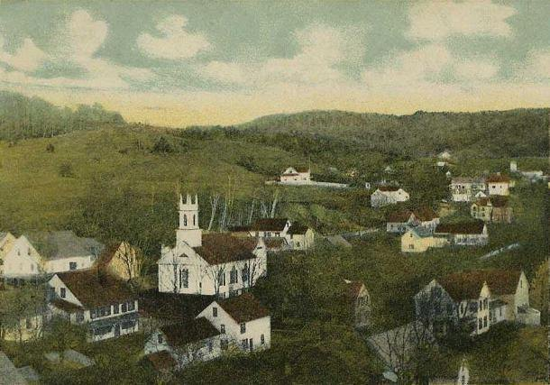
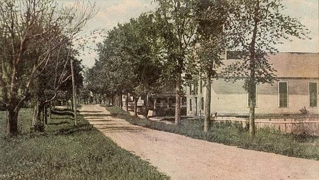

Some fell upon stony places, where they had not much earth… But other fell into good ground, and brought forth fruit, some an hundredfold, some sixtyfold, some thirtyfold.
Matthew 13:5, 8
A Light in Gilsum
The old man could not sleep. The doors were shut, and no one in the house was stirring. Then, about midnight, he saw “a light about a foot from my face as bright as fire.”

He thought he had only moments to live. He prayed that the Lord would have mercy on his soul.1
It was the winter of 1810–11, in the hill town of Gilsum, New Hampshire. Solomon Mack had been a soldier, a teamster, a sea captain, a merchant and a farmer. He had been scalded, had broken his wrist, had cut his leg with an axe, had been battered by storms at sea, and had been cheated more than once. Now, by his own reckoning in “the 76th year” of his age, he had been “taken with the Rheumatism” that fall, and the pain kept him in bed all winter. His wife, Lydia, had to help him into bed at night and out of it in the morning.2
Lying there, he had begun to think about his life. A passage from the Gospel of Matthew came into his mind, and he could not place it. So he asked Lydia whether those words were in the Bible. She told him they were. Solomon was stung. “My wife was my only instructor,” he later wrote; “I had never read the bible.”3
The light was not the last. Another night he saw a second one. Another night, in the dark, he heard himself called by his Christian name, and he rose up to answer.4
We can picture the farmhouse in that long New Hampshire winter: a fire banked low, snow against the walls, an old man awake in the dark while his wife slept beside him.† What Solomon himself recorded is plainer and more striking. He prayed most of the winter. Then, as spring came on, he wrote, “light shined into my soul.”5
One evening, sitting by the fire, he asked the Lord for a sign: if God was with him, let his pains be eased for that one night. “And blessed be the Lord,” he wrote, “I was entirely free from pain that night.” After that, he said, “every thing appeared new and beautiful. Oh how I loved my neighbors; how I loved my enemies—I could pray for them.”6
The next year, an old man who had never learned to read well paid a printer in Windsor, Vermont, to publish his story. He called it A Narraitve of the Life of Solomon Mack. The spelling of the title was his own. So was the hard-won faith.7
Solomon was Joseph Smith’s grandfather. This chapter is about two families of plain New England people, the Macks and the Smiths. Neither was famous. Neither belonged comfortably to any church. Their ground was stony, both on their farms and, at times, in their hearts. But seeds fell there. Look closely, and you can already see the boy who would be born to them: a grandfather’s grit and dry humor, a grandmother’s morning and evening prayers, a plain-spoken honesty that would not pretend to be sure. Latter-day Saints see in these families the Lord’s hand at work long before anyone knew what He was preparing.
“Like the Wild Ass’s Colt”
Solomon Mack was born in Lyme, Connecticut, near the mouth of the Connecticut River. The Joseph Smith Papers give his birth as September 15, 1732. Solomon’s own book, and his daughter Lucy’s history after it, give a later date.8 Either way, his childhood was short. His father had once owned “a large property,” Solomon wrote, but misfortunes came, and when Solomon was four the family scattered. “I was bound out to a farmer in the neighborhood.”9
The arrangement was common in colonial New England, and often hard. Solomon remembered being “rather considered as a slave than a member of the family.” His master “taught me to work, and was very careful that I should have little or no rest,” but “never taught me to read or spoke to me at all on the subject of religion.” Solomon grew up, as he put it, “like the wild ass’s colt,” borrowing a phrase from the book of Job.10
One detail from those years is worth remembering. As a boy, Solomon suffered “a terrible fever sore on my leg, which had well nigh proved fatal to my life.” His master paid for the best physicians and surgeons, and the leg was saved.11 Two generations later, a fever sore in a little boy’s leg would bring Solomon’s grandson to the edge of amputation.
When his indenture ended, at about twenty-one, Solomon enlisted to fight in the French and Indian War. Lucy later copied his war stories into her own history, and they read like adventure tales. Once, driving the general’s baggage near Fort Edward, he lost three oxen and went back alone to find them. Four warriors came out of the woods. He had only a walking staff in his hand, and one other man was some distance behind him. He did the only thing he could think of. He charged, shouting, “rush on! rush on my boys! we’ll have the devils.” The warriors fled. In his own book Solomon added, dryly, “I am bound to say the grass did not grow under my feet.”12
That dry humor ran in the family. Solomon’s grandson would one day own up, a little sheepishly, to his own “native cheery temperament.”13
In 1758, near Lake George, “a musket ball passed under my chin within half an inch of my neck.” At Fort Ann, he wrote, “the tomahawks and bullets flew round me like hail stones.” As he ran, he saw a wounded man with the enemy close upon him, “nevertheless I turned aside for the purpose of assisting him,” and got the man to safety.14
Those words are from a young soldier who, by his own account, “had no reflection only that I thought I had by my good luck escaped a narrow shot.”15 It would be fifty years before he thought otherwise.
Morning and Evening
In 1759, the year he left the army, Solomon met “an accomplished young woman, a school teacher, by the name of Lydia Gates,” the daughter of a well-to-do family in East Haddam, Connecticut. They were married shortly afterward.16

Solomon had money from the war and put it into land. Then he cut his leg with an axe, and the man he hired to finish the work ran off with the payment. “The consequence was,” he wrote, “I lost the land altogether.”17 It was the first of many such sentences in his life.
In 1761 the young couple moved to Marlow, New Hampshire. It was “no other than a desolate and dreary wilderness,” Solomon said, where “only 4 families resided within 40 miles.” There were no schools. So Lydia became the school.
Solomon’s tribute to her is the warmest passage in his story. She “assumed the charge of their education, and performed the duties of an instuctress as none save a mother is capable of.” He went on:
She, besides instructing them in the various branches of an ordinary education, was in the habit of calling them together both morning and evening, and teaching them to pray; meanwhile urging upon them the necessity of love towards each other, as well as devotional feelings towards Him who made them.18
Solomon himself did not yet pray. He was away much of the time: freighting cargo, fighting again in the Revolution, sailing as a privateer with his two oldest sons, Jason and Stephen. He went to sea, bought a ship, lost it to “storms and wrecks,” and came home after four years “about pennyless.”19 It was Lydia who stayed, taught, prayed and held the family together.
Those four years were among the hardest of Solomon’s life, and his own account of them is raw. At sea a hurricane carried both masts overboard. Another voyage ended on a reef, and he had to sell his ship to pay the men who helped free her. He lay sick in Salem for weeks. Meanwhile, at home, men he had trusted with his business took advantage of his absence, and his family was “turned out of doors.” When he finally came back, he found he had “won nothing.” “Kind reader,” he wrote, “look at the nature of mankind, what they will do for silver and gold.” He admitted that he no longer cared “whether I lived or died.”20
Looking back from old age, Solomon saw those years differently. He had been in danger again and again, and “my God must have given me some warnings of my danger,” he wrote. Then he added a line that sums up his whole book: “the devil had great hold on me and I served him well, but the Lord was with me.”21
Lucy, the youngest daughter, never forgot one scene from her childhood. When she was about eight, her mother fell so ill that everyone, including Lydia herself, expected her to die. Lydia called her children around her bed and urged them “to always remember the instructions which she had given them: to fear God and walk uprightly before him.” Then she gave little Lucy to her son Stephen, asking him to raise her as his own, and said goodbye to each child. Lydia recovered. The instruction stayed with her daughter for life.22
Her children remembered. Jason, the oldest, became what Lucy called “a Seeker” before he was sixteen. He believed “that, by prayer and faith the gifts of the gospel might be attained which were enjoyed by the ancient disciples of Christ,” and that God “would, at some subsequent period, manifest his power as he anciently had done—in signs and wonders.”23 He became a preacher. Years later he gathered about thirty poor families onto land he had bought for them in New Brunswick, and he wrote that the Lord had given him “the gift of healing by the prayer of faith.”24
Like the Seekers of Roger Williams’s day, Jason Mack was waiting for the old gifts to return. He did not live to see what his little sister’s son would claim.
Two Sisters
That little sister was Lucy, born in Gilsum in July 1775.25 Her history of the family, dictated in 1844 and 1845 after the deaths of her sons, is one of the great sources for this book. It is also, in places, heartbreaking.
Lucy’s two older sisters, Lovisa and Lovina, both fell ill with consumption, the wasting lung disease we now call tuberculosis. Lucy helped nurse Lovina. She remembered carrying her sister to bed near the end. “Although I was but thirteen years old,” she said, “she was so emaciated I could carry her with considerable ease.” Lucy’s hand slipped, and Lovina cried out: “Oh! Sister, that hurt me.” Decades later, the memory still stung. Lucy wrote that “the thought that I had caused her pain in laying her on her death bed wounded me much.”26
Lovina said goodbye to her family—“father, mother, brothers, sister, and dear companions, all farewell—I am going to rest, prepare to follow me”—and asked to recite a hymn. Then “she folded hands across her breast, and then closed her eyes forever.”27
Lovisa died not long after. Her father had gone to bring her home. At an inn on the road, he settled her in an easy chair and stepped into the next room for a little water and wine. “He was absent but a moment,” Lucy wrote, “but when he returned it was too late.”28
The grief stayed with Lucy for years. She became, in her own words, “pensive and melancholy.” She read the Bible, prayed, and longed for what the preachers called “a change of heart.” But she ran into the same problem her son would later describe. If she joined one church, “all of the rest will say I am in an error.” Each church claimed to be right, “and this makes them witnesses against each other.”29
Lucy Mack would carry that question with her to Tunbridge, Vermont, where her brother Stephen lived. There she would meet a young man from a family that asked the same question in a very different way.
The Captain’s Son
Southeast of Gilsum, across the line in Massachusetts, the Smith family had lived in one town for generations.
Asael Smith was born in Topsfield, Massachusetts, on March 7, 1744. His father, Samuel Smith, was a leading man in town, a militia captain and a representative to the colonial legislature, remembered at his death as “a sincere friend to the liberties of his country, and a strenuous advocate for the doctrine of Christianity.”30 Asael’s mother died shortly after his birth. He was raised by a stepmother, and the memory was not a happy one.
He carried another mark from childhood. When he was small his neck was badly burned, and as the scar healed it drew the cords tight, leaving his neck stiff and his head held a little to one side. A later family history noted that this was the origin of a nickname, “Crooked-neck Smith,” and took pains to add that he “was not deformed in any way.”31
On February 12, 1767, Asael married Mary Duty. They would have eleven children together.32 They lived for a time in several New Hampshire towns, and during the Revolution Asael served in the American army. After his father died in 1785, he brought his family home to Topsfield. Their son Joseph, the future father of the Prophet, had been born there on July 12, 1771.33
Asael did not fit comfortably in Topsfield. A great-grandson who wrote the family’s history in 1902 described him as “a man of very liberal views,” who “always expressed his honest opinions whether they were in accord with prevailing views or not.” In religion he was “somewhat of a Universalist,” believing that God would ultimately save all His children, and he held “that in America, all men should have free and equal religious liberty.” It was “commonly reported in the family” that these views cost him the goodwill of his neighbors.34
Of Mary Duty herself, the surviving record says less than we would like. She was born in Rowley, Massachusetts, in October 1743, and she outlived her husband by nearly six years. She raised eleven children through war, debt and repeated moves. What we know of her character comes mostly from the end of her life. In 1836, at the age of ninety-two, she made a long journey to Ohio to see her grandson Joseph, a journey this book will follow in Chapter 9. Women like Mary Duty Smith rarely wrote their own stories. Their lives can be traced in the children they raised, and her children grew up to be stubborn, hardworking, honest and serious about God, even when they disagreed about how to worship Him.35
In 1791 the Smiths left Massachusetts for good. They went north to Tunbridge, in the hill country of Vermont, where Asael and his sons cleared a farm out of “a heavy growth of timber.”36 In 1797, Asael’s son Joseph joined a Universalist society in Tunbridge.37
“Do More Than You Talk Of”
In Chapter 1 we heard part of the letter Asael wrote on April 10, 1799, for his family to read after his death. He addressed it, unusually, to “My Dear Selfs,” and urged them to “search the Scriptures and consult sound reason,” and to look to Christ. The rest of the letter is worth hearing too, because it shows the kind of home Joseph Smith Sr. grew up in.
Asael began with his wife. He knew he was “not free in speech, especially when sick or sad,” so he wrote down what he might not manage to say on his deathbed. To Mary he wrote, “I do with all the strength and power that is in me, thank you for your kindness and faithfulness to me.” He commended her to God, “the husband of the widow.” Then, remembering his own childhood, he added a practical request. If she married again, she should “remember what I have undergone by a stepmother.”38
To his children he was earnest about the soul. “Trifle not in this point; the soul is immortal; you have to deal with an infinite Majesty.” He believed in a God who was fair to everyone. If scripture and reason taught “that God is just to all and His tender mercies are over all His works,” then, he wrote, “believe them.” He told his children that God’s love “is ten thousand times greater towards you than ever any earthly father’s could be to his offspring.”39
Then came counsel that sounds like a Vermont farmer talking across a fence:
Do not talk and make a noise to get the name of forward men, but do the thing and do it in a way that is fair and honest, which you can live and die by and rise and reign by; therefore, my children, do more than you talk of, in point of religion.40
He told them to work hard and not to fear failure. “It is better to be a rich cobbler than a poor merchant; a rich farmer than a poor preacher.” For his own part, he wrote, “I never found anything too hard for me in my calling, but discouragement and unbelief.” His grandson would need that sentence.41
Asael Smith lived for more than thirty years after writing that letter. He died in 1830, in St. Lawrence County, New York, the same year his grandson published the Book of Mormon. That summer, his son Joseph traveled to northern New York to see him and told him about the book. According to another son, John, the old man received the news “with gladness; and remarked, that he had always expected, that something would appear to make known the true gospel.”42
A Meeting in Tunbridge
The roads of the two families crossed in Tunbridge.
Lucy’s brother Stephen Mack had settled there and become a successful merchant. He was the brother to whom their mother had once promised Lucy if she died, and he looked after his youngest sister. After Lovina’s death, Lucy’s parents hoped a stay with Stephen “might serve to divert my mind.” While she was there, Lucy wrote, “I became acquainted with a young man by the name of Joseph Smith; (to whom I was subsequently married).”43
It is a quiet sentence for so large a turning. A grieving young woman from a praying mother’s home met a farmer’s son from a household of independent thinkers. Picture the two of them in a Vermont meetinghouse yard or at Stephen’s store, she quick and talkative, he tall and steady.† The record does not say how their courtship went. It says only that Lucy went home, came back, and stayed until she married “the next January.”44
Neither of them belonged to a church. Both of them were searching. Behind them stood two very different parents. Lydia Mack taught her children to pray morning and evening. Asael Smith taught his children to search the scriptures, trust their reason, and do more than they talked of in religion. Their son would inherit both.
A Late Harvest
Solomon Mack lived to see the beginning of the story this book tells, though he could not have known it. He died at Gilsum on August 23, 1820.45 That spring, in a grove in western New York, his grandson Joseph, then fourteen, had knelt down to pray. Whether the old man ever heard of it, we do not know.
What we do know is how Solomon closed his book. After a lifetime of what he called chasing phantoms, he wanted others to learn sooner than he had. “Time will come when we shall all be called for,” he warned, “sooner or later, when money cannot buy our breath one moment.” Then he turned to his readers who were raising children: “Parents, a little caution how to train up your children in the sight of the Lord.”46
He had married a woman who did exactly that. It took Solomon until his seventy-sixth year, by his own count, to pray the way Lydia had taught their children to pray. But the seed she planted did not die in stony ground. It went with her daughter Lucy to Vermont, and from there to New York.
Jesus told a parable about a sower whose seed fell in different places: by the wayside, on stony ground, among thorns and on good ground. The parable does not say the sower stopped sowing because some ground was hard. It ends instead with a harvest, “some an hundredfold, some sixtyfold, some thirtyfold.”47
In the Mack and Smith families, the sowing had been patient and often unseen. A mother’s prayers, a soldier’s late conversion, a grandfather’s letter in a drawer: none of it looked like much. But the next generation would inherit it all. That generation began with a wedding in Tunbridge, on a January day in 1796.
Within six years, the bride would lie in a sickroom so weak that she “could scarcely endure, even a foot fall upon the floor,” while the doctors gave her up. What she promised God there would shape everything that followed.48
Key: † marks a sentence or passage of imagined connective detail; the note explains what is documented. Full citations and verification status are in 02-sources.md. Quotations from Solomon Mack’s Narraitve are transcribed from the 1811 printing with the old “long s” (ſ) rendered as a modern s; spelling is otherwise his.
Notes
-
Solomon Mack, A Narraitve of the Life of Solomon Mack (Windsor, VT: printed for the author, [1811]), about 22–23, Internet Archive, https://archive.org/details/narraitvesicofli00mack. The shut doors and the household asleep are in Mack’s account; so is his fear that he had only moments to live. ↩
-
Mack, Narraitve, about 19–20. Mack dates the illness to “the fall of the year 1810” and says the pain kept him in bed through the winter. ↩
-
Mack, Narraitve, about 19–21. He asks his wife whether the words of Matthew 11:28–30 (“Come unto me, all ye that labour…”) were “in the Bible or not.” ↩
-
Mack, Narraitve, about 22–23. ↩
-
Mack, Narraitve, about 23. † The banked fire, the snow and the sleeping Lydia are imagined. The illness, the sleepless nights, the lights and the voice are documented in Mack’s own account. ↩
-
Mack, Narraitve, about 23–24. The scriptural phrase he then recalls (“what things soever ye ask in prayer, believing, ye shall receive”) echoes Matthew 21:22 and Mark 11:24 (KJV). ↩
-
The Narraitve carries no date on its title page. It is usually dated 1811 from internal evidence; see the Joseph Smith Papers biography of Solomon Mack Sr., https://www.josephsmithpapers.org/person/solomon-mack-sr. Mack says he did not know “how to write, or read to any amount” as a young man (Narraitve, about 9). The traits named at the end of this section are the author’s summary of what follows in this chapter; the sentence on the Lord’s hand states a Latter-day Saint belief. ↩
-
Joseph Smith Pedigree Chart and Solomon Mack Sr. biography, JSP, https://www.josephsmithpapers.org/person/solomon-mack-sr (15 Sept. 1732). Mack’s Narraitve, 3, and Lucy Mack Smith, History, 1845, 1, give September 26, 1735. See
02-sources.md. ↩ -
Mack, Narraitve, 3–4. ↩
-
Mack, Narraitve, 4–5. Compare Job 11:12 (KJV): “though man be born like a wild ass’s colt.” ↩
-
Mack, Narraitve, 5. ↩
-
Lucy Mack Smith, History, 1845, 2–3, JSP, https://www.josephsmithpapers.org/paper-summary/lucy-mack-smith-history-1845/8, quoting her father’s narrative; Mack, Narraitve, 6–7 (“grass did not grow under my feet”). Both versions use the language of a colonial soldier about his Native opponents; we quote only the shout and the outcome. ↩
-
Joseph Smith—History 1:28, https://www.churchofjesuschrist.org/study/scriptures/pgp/js-h/1. The context, his confession of “levity” as a youth, is told in Chapter 6. The family resemblance is the author’s observation, not Joseph’s. ↩
-
Lucy Mack Smith, History, 1845, 3–4, JSP, https://www.josephsmithpapers.org/paper-summary/lucy-mack-smith-history-1845/9. ↩
-
Mack, Narraitve, 7. ↩
-
Lucy Mack Smith, History, 1845, 5, JSP, https://www.josephsmithpapers.org/paper-summary/lucy-mack-smith-history-1845/11. The JSP biography gives the marriage date as January 4, 1759. ↩
-
Lucy Mack Smith, History, 1845, 5. In his own Narraitve, 9–10, Mack says he “cut my leg and lay under the Doctors care the whole season.” ↩
-
Lucy Mack Smith, History, 1845, 5–6, JSP, https://www.josephsmithpapers.org/paper-summary/lucy-mack-smith-history-1845/12, quoting Solomon Mack. Original spelling (“instuctress”) retained. ↩
-
Lucy Mack Smith, History, 1845, 6–8, JSP, https://www.josephsmithpapers.org/paper-summary/lucy-mack-smith-history-1845/14. ↩
-
Mack, Narraitve, about 14–17. Mack names several of the men involved and the debts at issue; we summarize. ↩
-
Mack, Narraitve, about 14. ↩
-
Lucy Mack Smith, History, 1845, 27, JSP, https://www.josephsmithpapers.org/paper-summary/lucy-mack-smith-history-1845/34. ↩
-
Lucy Mack Smith, History, 1845, 8, JSP, https://www.josephsmithpapers.org/paper-summary/lucy-mack-smith-history-1845/14. ↩
-
Lucy Mack Smith, History, 1845, 45–47, JSP, https://www.josephsmithpapers.org/paper-summary/lucy-mack-smith-history-1845/53, including Jason Mack to Solomon Mack Jr., June 30, 1835. ↩
-
JSP biography of Lucy Mack Smith (8 July 1775). Lucy’s own history, 1845, 26–27, says July 8, 1776. See
02-sources.md. ↩ -
Lucy Mack Smith, History, 1845, 16, JSP, https://www.josephsmithpapers.org/paper-summary/lucy-mack-smith-history-1845/22. ↩
-
Lucy Mack Smith, History, 1845, 16–17. ↩
-
Lucy Mack Smith, History, 1845, 17–18, JSP, https://www.josephsmithpapers.org/paper-summary/lucy-mack-smith-history-1845/25. ↩
-
Lucy Mack Smith, History, 1845, 27–28, JSP, https://www.josephsmithpapers.org/paper-summary/lucy-mack-smith-history-1845/35. ↩
-
Joseph Fielding Smith, “Asahel Smith of Topsfield, with Some Account of the Smith Family,” Topsfield Historical Society, Historical Collections 8 (1902), 88–89, quoting the Salem Gazette, Nov. 22, 1785, https://archive.org/details/AsaelSmithOfTopsfield. Asael’s birth date is from the JSP Pedigree Chart. ↩
-
J. F. Smith, “Asahel Smith of Topsfield,” 90. The 1902 text explains the stiff neck and denies any deformity. The nickname is reported in family tradition and in Richard Lloyd Anderson, Joseph Smith’s New England Heritage, rev. ed. (2003); see
02-sources.md. ↩ -
JSP, Joseph Smith Pedigree Chart, https://www.josephsmithpapers.org/back/joseph-smith-pedigree-chart; J. F. Smith, “Asahel Smith of Topsfield,” 89. The family register in Lucy Mack Smith, History, 1845, 31, lists the marriage date. ↩
-
J. F. Smith, “Asahel Smith of Topsfield,” 89–90, 97; JSP, Joseph Smith Pedigree Chart. ↩
-
J. F. Smith, “Asahel Smith of Topsfield,” 90. ↩
-
JSP, Joseph Smith Pedigree Chart (Mary Duty, b. 11 Oct. 1743, Rowley, MA; d. 27 May 1836, Kirtland, OH); Lucy Mack Smith, History, 1845, 31 (family register, “Mary Duty May 27, 1836 in Kirtland”). The character sketch in the last two sentences is the author’s summary, not a quotation. ↩
-
J. F. Smith, “Asahel Smith of Topsfield,” 97. ↩
-
JSP biography of Joseph Smith Sr. (“Joined Universalist Society at Tunbridge, 1797”), https://www.josephsmithpapers.org/person/joseph-smith-sr, citing Larry C. Porter’s 1971 dissertation. Whether Asael also joined is reported in secondary works but was not confirmed for this draft; see
02-sources.md. ↩ -
Asael Smith to “My Dear Selfs,” April 10, 1799, as printed in J. F. Smith, “Asahel Smith of Topsfield,” 91–92; original in Church History Library, MS 8605. ↩
-
Asael Smith letter, 1799, in J. F. Smith, “Asahel Smith of Topsfield,” 92–93. “His tender mercies are over all his works” echoes Psalm 145:9 (KJV). ↩
-
Asael Smith letter, 1799, in J. F. Smith, “Asahel Smith of Topsfield,” 94. ↩
-
Asael Smith letter, 1799, in J. F. Smith, “Asahel Smith of Topsfield,” 94. The last sentence of the paragraph is the author’s forward glance. ↩
-
JSP, Joseph Smith Pedigree Chart (Asael d. 31 Oct. 1830); Lucy Mack Smith, History, 1845, 172–73, JSP, https://www.josephsmithpapers.org/paper-summary/lucy-mack-smith-history-1845/181, quoting the journal of John Smith on the 1830 visit of Joseph Sr. and Don Carlos Smith to Asael at Stockholm, New York. John Smith wrote this recollection years after the event. ↩
-
Lucy Mack Smith, History, 1845, 27–28, JSP, https://www.josephsmithpapers.org/paper-summary/lucy-mack-smith-history-1845/35. ↩
-
Lucy Mack Smith, History, 1845, 28. † The setting and the descriptions of Lucy and Joseph are imagined; the record says only that they met while she was staying with Stephen at Tunbridge. Joseph Sr.’s height is described in later family recollections, not here. ↩
-
JSP biography of Solomon Mack Sr. (d. 23 Aug. 1820, Gilsum, NH). ↩
-
Mack, Narraitve, about 24–25. The scanned text reads “in the sight of the Lord” (with a long s that the scan renders as “fight”); see
02-sources.md. ↩ -
Matthew 13:3–8 (KJV). ↩
-
Lucy Mack Smith, History, 1845, 39, JSP, https://www.josephsmithpapers.org/paper-summary/lucy-mack-smith-history-1845/46. The illness came about six months after the family moved to Randolph, Vermont, in 1802; Chapter 3 tells the story. ↩